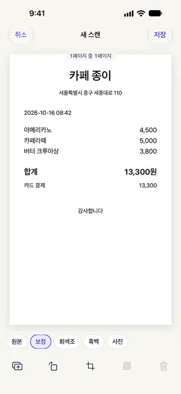

계약서 스캔해서 PDF로 보내기 (아이폰)
최종 수정 2026-10-22
계약서는 몇 장이든 한 파일로 묶여 있어야 상대가 순서대로 확인할 수 있어요. Paperkeep은 문서 카메라로 이어 찍은 페이지를 PDF 한 개로 저장하고, 스캔부터 공유까지 무료에 워터마크도 붙지 않아요. 파일은 이 iPhone 안에만 있고, 어디로 보낼지는 공유할 때 직접 골라요.
먼저, iOS 기본 기능으로 하는 방법
- 파일 앱에서 저장할 폴더를 열고 오른쪽 위 '⋯' 버튼에서 '문서 스캔'을 골라요.
- 계약서를 한 장씩 비추면 자동으로 촬영돼요. 마지막 페이지까지 찍고 '저장'을 누르면 전부 PDF 하나로 묶여요.
- 만들어진 PDF를 길게 눌러 '공유'를 고른 뒤 메일이나 메시지로 보내요.
- 기본 이름으로 저장되니, 나중에 찾기 쉽도록 그 자리에서 이름을 바꿔 두세요.
Paperkeep으로 하는 방법
- 첫 화면('문서') 아래의 '스캔'을 탭해 문서 카메라를 열어요.
- 첫 장부터 서명란이 있는 마지막 장까지 순서대로 비추고, 다 찍었으면 카메라 화면의 '저장'을 눌러요.
- '새 스캔' 화면에서 페이지를 넘겨 보며 확인해요. 비뚤어진 장은 '자르기', 순서가 어긋난 장은 '페이지 정리'로 고칠 수 있어요.
- 계약서에는 '흑백' 필터가 글자를 또렷하게 해 줘요. 여러 장이면 '모든 페이지에 흑백 적용'을 누른 다음 '저장'을 탭해요.
- 목록에서 계약서를 열고 오른쪽 위 공유 버튼(네모와 위쪽 화살표)을 누르면 PDF가 곧바로 공유 시트로 넘어가요. 메일이나 메시지를 골라 보내요.

이 문서만의 팁
- 도장이나 서명이 있는 마지막 장, 특약이 적힌 별지까지 빠짐없이 스캔하세요. 계약서 스캔에서 가장 자주 빠지는 페이지가 바로 그 장들이에요.
- 간인(페이지 사이에 걸쳐 찍은 도장)이 있는 계약서는 종이 가장자리까지 화면에 들어오게 찍어야 도장이 잘리지 않아요.
- Paperkeep이 제안한 제목은 '이름 변경'에서 '2026 임대차계약서'처럼 바꿀 수 있고, 바꾼 이름은 파일 앱의 PDF 이름에도 그대로 반영돼요.
- 보낸 뒤에도 종이 원본은 버리지 말고 보관하세요. 스캔본은 어디까지나 사본이에요.
곧 App Store에 출시돼요.